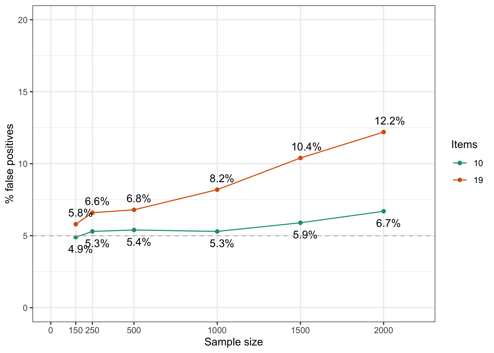

RIbootLRT(simdata[[1]][,-9], iterations = 5000, samplesize = 300, cpu = 8)Conditional Likelihood Ratio Test and sample size
False positive rate simulation tests
Magnus Johansson ![]()
1 Introduction
In my recent preprint on detection of item misfit in Rasch models (Johansson 2025a), the conditional likelihood ratio test (LRT, Andersen 1973) was part of one of the simulation studies. In that study, only the detection rate of misfitting items was assessed. In this brief note, the false detection rate across varying sample sizes will be investigated.
2 Method
For simplicity, the simulated dataset from the previously mentioned preprint will be re-used, and the misfitting item removed. This results in 19 dichotomous items, all simulated to fit the Rasch model. The easyRasch (Johansson 2025b) package contains a function to use non-parametric bootstrap with the LRT. The code to do so is presented below. As a comparison, a subset of 10 items from the same data was used to evaluate the impact of number of items on LRT false positive performance.
Each sample size variation used 5000 bootstrap iterations.
3 Results
Results are presented in Figure 1.
Code
library(dplyr)
library(ggplot2)
data.frame(Percent = c(6.6,6.8,8.2,10.4,12.2, 5.3, 5.4, 5.3, 5.9, 6.7),
n = c(250,500,1000,1500,2000,250,500,1000,1500,2000),
k = factor(c(19,19,19,19,19,10,10,10,10,10))) %>%
ggplot(aes(x = n, y = Percent, color = k)) +
geom_hline(yintercept = 5, linetype = "dashed") +
geom_point(position = "dodge") +
geom_line() +
geom_text(aes(label = paste0(Percent,"%")),
position = position_dodge(width = 9),
hjust = 0.3, vjust = -1,
color = "black"
) +
scale_x_continuous('Sample size', limits = c(0,2200), breaks = c(0,250,500,1000,1500,2000)) +
scale_y_continuous('% false positives', limits = c(0,20)) +
scale_color_brewer('Items',palette = "Dark2") +
theme_bw()

4 Discussion
This is a brief note, not a full scale simulation study. Many variables could be manipulated to better understand the expected behavior of LRT when all items fit a Rasch model. Nevertheless, this small study provides some useful information about the relationship between sample size, number of items, and false positive rate for the LRT. Even at the smaller sample sizes of 250 and 500, the false positive rate is above the expected 5%. The effect is stronger for the condition with more items. It seems clear that one should not rely too heavily on the LRT in determining model fit, especially when sample size is above 1000 and number of items is high.
I will add a condition using polytomous items later on.
5 References
Andersen, Erling B. 1973. “A Goodness of Fit Test for the Rasch Model.” Psychometrika 38 (1): 123–40. https://doi.org/10.1007/BF02291180.
Johansson, Magnus. 2025a. “Detecting Item Misfit in Rasch Models.” OSF Preprints. https://doi.org/10.31219/osf.io/j8fg2.
———. 2025b. easyRasch: Psychometric Analysis in r with Rasch Measurement Theory. https://github.com/pgmj/easyRasch.
Reuse
Citation
BibTeX citation:
@online{johansson2025,
author = {Johansson, Magnus},
title = {Conditional {Likelihood} {Ratio} {Test} and Sample Size},
date = {2025-02-07},
url = {https://pgmj.github.io/clrt.html},
langid = {en}
}
For attribution, please cite this work as:
Johansson, Magnus. 2025. “Conditional Likelihood Ratio Test and
Sample Size.” February 7, 2025. https://pgmj.github.io/clrt.html.